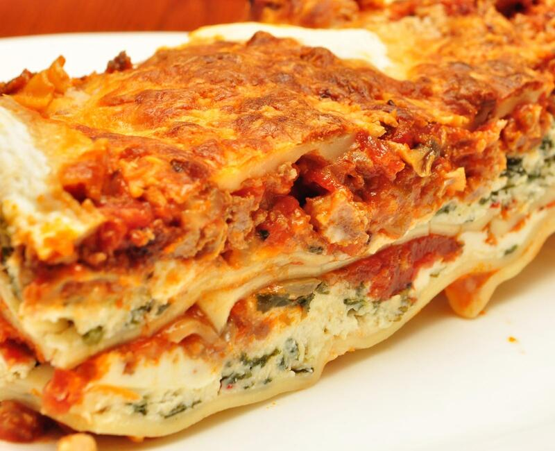

"World's Best Lasagna"

Description:
Here you will find what is one of my favorite lasagna recipes. It has just the right ratio of meat, cheese, and sauce. Of course, unlike most recipes, I highly recommend making this to your liking. Please use this recipe and instructions as more a guideline than a must-do. If you like more meat in your lasagna, then add more meat! If you like more cheese, sauce, or any other kind of seasoning to add, please do! Everyone has their own taste and preferences. If you don't practice, use your instincts and experiment, you will never be able to grow in your cooking abilities. If you think you should change something, give it a try - it just might turn out great. If you want to just follow along and try some new things another time, that is fine too. I hope you enjoy!
A brief history of lasagna: Lasagna has been around for a long time. It originated in the middle ages, as early as 1282, if not earlier. It was first referenced in a poem in 1282 and the earliest recipe recorded in the 14th century. While we think of lasagna as an Italian dish, some theories suggest its first origins started in Rome; some even theorize it began in Greece!
Ingredients:
- Italian sausage: 1lb
- Lean ground beef: 3/4 lb
- Minced onion: 1/2 cup
- Garlic clove, crushed: 3
- Tomat sauce: 2 cans, 6.5 oz each
- Crushed tomatoes: 1 can, 28 oz
- Tomato paste: 2 cans, 6 oz each
- Water: 1/2 cup
- Parsley: 4 tbsp chopped, fresh
- Sugar: 2 tbsp
- Basil leaves: 1 1/2 tsp
- Salt: 1 1/2 tsp
- Italian seasoning: 1 tsp
- Fennel seeds: 1/2 tsp
- Lasagna noodles: 12
- Black Pepper, ground: 1/4 tsp
- Ricotta cheese: 16oz
- Egg, medium-size: 1
- Mozzarella cheese: 3/4 lb, sliced
- Parmigiano Reggiano (not parmesan): 3/4 cup, grated
Directions:
- Cook sausage, ground beef, onion, and garlic in a Dutch oven over medium heat until well browned. Stir in crushed tomatoes, tomato sauce, tomato paste, and water. Season with sugar, 2 tablespoons parsley, basil, 1 teaspoon salt, Italian seasoning, fennel seeds, and pepper. Simmer, covered, for about 1 1/2 hours, stirring occasionally.
- Bring a large pot of lightly salted water to a boil. Cook lasagna noodles in boiling water for 8 to 10 minutes. Drain noodles, and rinse with cold water. In a mixing bowl, combine ricotta cheese with egg, remaining 2 tablespoons parsley, and 1/2 teaspoon salt.
- Preheat the oven to 375 degrees F (190 degrees C).
- To assemble, spread 1 1/2 cups of meat sauce in the bottom of a 9x13-inch baking dish. Arrange 6 noodles lengthwise over meat sauce. Spread with 1/2 of the ricotta cheese mixture. Top with 1/3 of the mozzarella cheese slices. Spoon 1 1/2 cups meat sauce over mozzarella, and sprinkle with 1/4 cup Parmesan cheese. Repeat layers, and top with remaining mozzarella and Parmesan cheese. Cover with foil: to prevent sticking, either spray foil with cooking spray or make sure the foil does not touch the cheese.
- Bake in the preheated oven for 25 minutes. Remove the foil and bake for an additional 25 minutes. Rest lasagna for 15 minutes before serving.